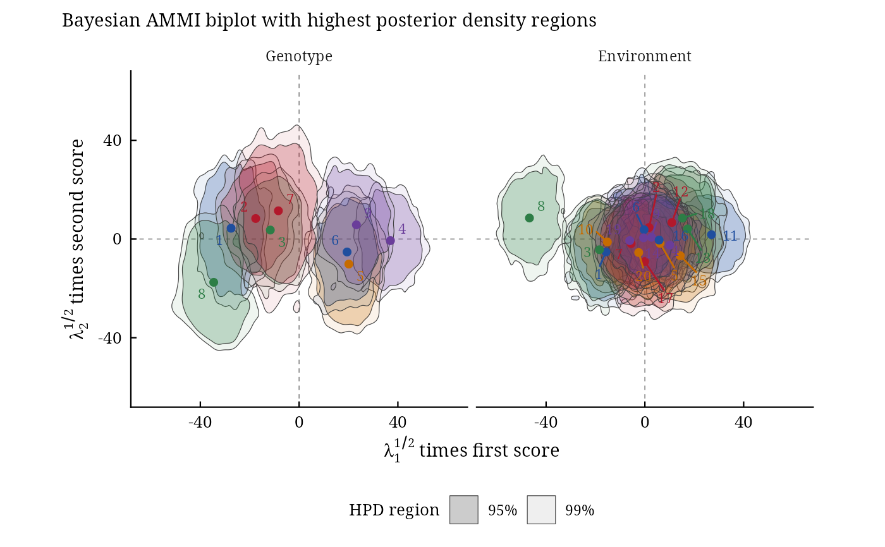

biplots() draws the Bayesian AMMI biplot of the first two bilinear terms with a highest posterior density
(HPD) region around every genotype and environment (Crossa et al. 2011, Fig. 3 and 4). A region that contains the
origin marks a genotype or environment whose interaction is not different from zero (stable); regions that
overlap mark genotypes or environments that cannot be told apart, a homogeneous group.
Usage
biplots(
model,
burnin = 0.3,
thin = 0.2,
pb = 0.05,
plot_stable = TRUE,
plot_unstable = TRUE,
ncolors = 5,
.which = c("both", "genotype", "environment"),
.grid = 100L
)
# Default S3 method
biplots(
model,
burnin = 0.3,
thin = 0.2,
pb = 0.05,
plot_stable = TRUE,
plot_unstable = TRUE,
ncolors = 5,
.which = c("both", "genotype", "environment"),
.grid = 100L
)Arguments
- model
the result of
bayes_ammi()(with.k >= 2).- burnin
proportion of the stored draws of every chain discarded at its start (default 0.3).
- thin
proportion of the remaining draws used (default 0.2: every fifth draw).
- pb
one or more probabilities \(p\): the regions hold \(100(1 - p)\)% of the posterior (default 0.05, the 95% region;
c(0.05, 0.01)draws the 95% and 99% regions of the paper). The classification uses the first value.- plot_stable, plot_unstable
draw the regions that contain the origin, and those that do not (default both).
- ncolors
number of colours used for the regions (default 5).
- .which
"both"(default),"genotype"or"environment".- .grid
number of grid points per axis of the density estimate (default 100).
Value
An object of class c("bam_biplots", "bam_result", "list"), with the components of the earlier
version:
contornsdata.tableof the region boundaries:byplot(Genotype, Environment),ID(number),name,prob(the region, for instance "95%"),piece(a region can have several pieces),x,y,stable.biplot_datadata.table, one row per genotype and environment:byplot,ID,name,x,y(posterior means of the coordinates),stable(region contains the origin),axis1_lower,axis1_upper(marginal HPD interval of the first coordinate),axis1_significant(it excludes zero),group(sign of the first coordinate when significant: positive, negative, or not significant).biplotthe
ggplot.
Methods: print(), plot(), bam_interpret().
Details
The points are the biplot coordinates of the paper,
$$\left(\lambda_1^{1/2}\alpha_{i1}, \lambda_2^{1/2}\alpha_{i2}\right), \qquad
\left(\lambda_1^{1/2}\gamma_{j1}, \lambda_2^{1/2}\gamma_{j2}\right),$$
computed draw by draw. For each genotype and environment a bivariate kernel density \(\hat{f}\) is estimated
from the draws (normal kernels, normal reference bandwidths); the \(100(1 - p)\)% HPD region is
\(\{\mathbf{x} : \hat{f}(\mathbf{x}) \ge c_p\}\) with \(c_p\) the
\(p\)-quantile of \(\hat{f}\) at the draws, so that the region holds \(100(1 - p)\)% of
them. The region contains the origin when \(\hat{f}(\mathbf{0}) \ge c_p\) (stable). The
criterion of the paper, the marginal HPD interval of the first coordinate excluding zero, is given as
axis1_significant.
Changes from the earlier versions. The regions were drawn for the singular vectors without the factor \(\lambda_k^{1/2}\), with a fixed bandwidth of 0.2 whatever the scale; a genotype counted as stable when the bounding box of its contour covered the origin.
References
Crossa, J., Perez-Elizalde, S., Jarquin, D., Cotes, J. M., Viele, K., Liu, G. and Cornelius, P. L. (2011). Bayesian estimation of the additive main effects and multiplicative interaction model. Crop Science, 51(4), 1458–1469. doi:10.2135/cropsci2010.06.0343
Hyndman, R. J. (1996). Computing and graphing highest density regions. The American Statistician, 50(2), 120–126.
Author
Julian Garcia Abadillo Velasco (garciaabadillo.j@ufl.edu), Diego Jarquin (diego.jarquin@gmail.com), Muhammad Yaseen (myaseen208@gmail.com)
Examples
data(Maiz)
fm1 <-
bayes_ammi(
.data = Maiz
, .y = y
, .gen = entry
, .env = site
, .rep = rep
, .nIter = 1000
, .k = 2
, .burnin = 200
, .thin = 1
, .chains = 1
, .priors = bam_priors(
mu_mean = 0
, mu_var = 1e+8
, tau_mean = 0
, tau_var = 1e+8
, delta_mean = 0
, delta_var = 1e+8
, lambda_mean = 0
, lambda_var = 1e+8
, nu = 1
, s2 = NULL
)
, .level = 0.95
, .seed = 1
, .align = TRUE
, .model = c("AMMI", "GGE")
, .het = FALSE
, .waic = TRUE
)
bp <-
biplots(
model = fm1
, burnin = 0
, thin = 1
, pb = c(0.05, 0.01)
, plot_stable = TRUE
, plot_unstable = TRUE
, ncolors = 5
, .which = "both"
, .grid = 100
)
bp$biplot

bp$biplot_data
#> Index: <stable>
#> byplot ID name x y stable axis1_lower
#> <char> <int> <char> <num> <num> <lgcl> <num>
#> 1: Genotype 1 1 -27.54613351 4.3811868 FALSE -39.63310154
#> 2: Genotype 2 2 -17.57654682 8.3225750 FALSE -29.15277260
#> 3: Genotype 3 3 -11.65727755 3.6480778 TRUE -22.78141590
#> 4: Genotype 4 4 36.99450633 -0.6411645 FALSE 26.56477727
#> 5: Genotype 5 5 20.13359182 -10.1374224 FALSE 8.67802108
#> 6: Genotype 6 6 19.42756155 -5.2499364 FALSE 9.84920344
#> 7: Genotype 7 7 -8.39152238 11.4485401 TRUE -20.02336371
#> 8: Genotype 8 8 -34.58410575 -17.5385829 FALSE -45.47254412
#> 9: Genotype 9 9 23.19992630 5.7667265 FALSE 12.59729382
#> 10: Environment 1 1 -15.74485079 -5.2334763 FALSE -27.36419362
#> 11: Environment 2 2 1.69469185 4.6858962 TRUE -8.59080466
#> 12: Environment 3 3 -18.37984164 -4.3276334 FALSE -28.79397845
#> 13: Environment 4 4 10.11725130 -2.4890138 TRUE 0.03777819
#> 14: Environment 5 5 6.15485980 -1.7467331 TRUE -4.21664855
#> 15: Environment 6 6 -0.31389655 3.7879421 TRUE -11.36943066
#> 16: Environment 7 7 -5.55710348 -1.8612596 TRUE -16.10428191
#> 17: Environment 8 8 -46.74098310 8.5194146 FALSE -55.49838150
#> 18: Environment 9 9 2.72039393 0.7042488 TRUE -7.99182509
#> 19: Environment 10 10 -15.19564510 -1.2071929 FALSE -24.55634602
#> 20: Environment 11 11 26.97306953 1.7861229 FALSE 15.98860966
#> 21: Environment 12 12 10.92855528 6.7111813 TRUE 0.47853996
#> 22: Environment 13 13 17.28891481 4.1063935 FALSE 5.35136574
#> 23: Environment 14 14 -0.51642246 0.5087735 TRUE -11.54219795
#> 24: Environment 15 15 14.32498450 -6.7594297 FALSE 3.56003779
#> 25: Environment 16 16 5.77051031 -0.4244907 TRUE -6.35983241
#> 26: Environment 17 17 -0.08895943 -9.1069407 TRUE -11.18078164
#> 27: Environment 18 18 15.19388381 8.4486632 FALSE 5.16969203
#> 28: Environment 19 19 -6.12954377 -0.6439043 TRUE -16.49168635
#> 29: Environment 20 20 -2.49986879 -5.4585617 TRUE -13.42563873
#> byplot ID name x y stable axis1_lower
#> <char> <int> <char> <num> <num> <lgcl> <num>
#> axis1_upper axis1_significant group
#> <num> <lgcl> <char>
#> 1: -18.107955 TRUE negative
#> 2: -6.855582 TRUE negative
#> 3: -1.066533 TRUE negative
#> 4: 47.217352 TRUE positive
#> 5: 30.631530 TRUE positive
#> 6: 30.335924 TRUE positive
#> 7: 4.633536 FALSE not significant
#> 8: -23.181984 TRUE negative
#> 9: 34.525571 TRUE positive
#> 10: -5.838617 TRUE negative
#> 11: 13.029888 FALSE not significant
#> 12: -7.157202 TRUE negative
#> 13: 20.851721 TRUE positive
#> 14: 16.554511 FALSE not significant
#> 15: 10.368147 FALSE not significant
#> 16: 4.361648 FALSE not significant
#> 17: -36.730895 TRUE negative
#> 18: 14.077201 FALSE not significant
#> 19: -3.760738 TRUE negative
#> 20: 36.685468 TRUE positive
#> 21: 22.237771 TRUE positive
#> 22: 27.338018 TRUE positive
#> 23: 9.454999 FALSE not significant
#> 24: 25.652371 TRUE positive
#> 25: 15.152550 FALSE not significant
#> 26: 10.319216 FALSE not significant
#> 27: 26.548346 TRUE positive
#> 28: 5.130181 FALSE not significant
#> 29: 8.000267 FALSE not significant
#> axis1_upper axis1_significant group
#> <num> <lgcl> <char>